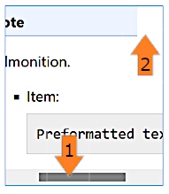
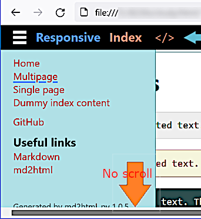

ResponsiveIndex
</>
ResponsiveIndex
</>

Attempt of creating responsive documentation design.
The solution works much better that it did. But it needs more study of HTML flexible design implementation.
The following setting:
<meta name="viewport" content="width=device-width, height=device-height, initial-scale=1.0, minimum-scale=1.0">in files doc_src/templates/multipage.html and doc/layout/styles.css.
The best practices in activating and deactivating of the sidebar. Now it's done using JavaScript but probably pure CSS would be better. Also see here.
If possible improve look and feel on mobile devices.
Look at the admonition problem:

Drop down menu is not scrolled if exceeds the page height:

Also see SO: Have a fixed position div that needs to scroll if content overflows.